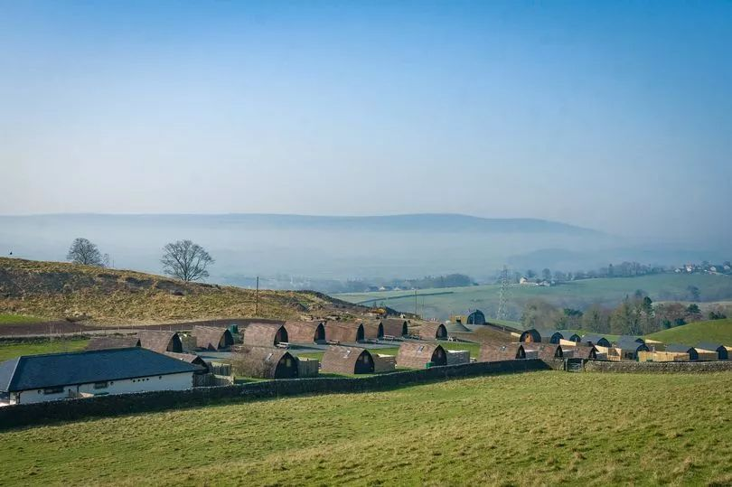
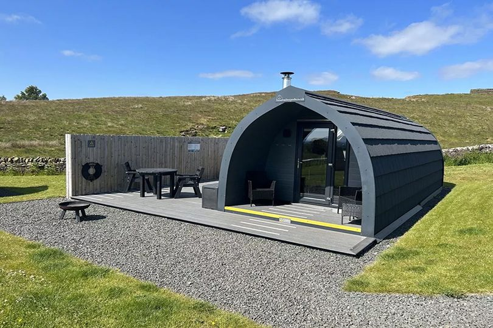

Herding Hill Farm awarded AA Platinum Pennant status
Our North East glamping site is celebrating after being named one of the best in the UK. Herding Hill Farm, near Haltwhistle, has been awarded an AA Platinum Pennant, which recognises the country’s very best campsites and caravan parks. Inspectors praised the luxury glamping accommodation and ‘first-class’ facilities at the family-friendly site, which is less than a mile from Hadrian’s Wall and attracts visitors from across the UK. The latest accolade from the AA comes after Herding Hill Farm was highly commended in the 2023 North East England Tourism Awards and achieved a five-star rating by Visit England.


Phil Humphreys, who manages the site with his wife Sue, said: “We’re absolutely delighted to receive this recognition from the AA. The entire team works incredibly hard to ensure that our guests have an unforgettable stay at Herding Hill so they can just relax and enjoy its fantastic location. We are committed to continually updating and improving our facilities and services to make our guest experience even better, from the opening of our new luxury Castle pods to our regular Friday night home-made pizza delivery service for guests. It’s about creating a destination where people can come in the knowledge they will have a great time and create long-lasting memories.”
The AA Platinum Pennant is awarded to sites which consistently offer outstanding camping experiences. Herding Hill Farm is one of only two sites in Northumberland to be awarded the AA Platinum Pennant and among 58 be given the accolade nationally. A full list can be found HERE.
The team of AA inspectors said the addition of Herding Hill Farm’s new adult-only luxury Castle Pods took the site’s glamping facilities to ‘the next level’. The pods, which are named after landmark castles in Northumberland, all have outdoor tubs, complete with dark sky-friendly lighting for stargazing.
Press Links
- Northumberland site named among UK's best for camping and glamping
- Herding Hill Farm, Haltwhistle one of UK's best campsites
- North East glamping site named among the best in the UK
- North East England glamping site named among the best in the UK
- Award for Northumberland glamping site puts it among the best in the UK
- An Idyllic Countryside Stay at Herding Hill Farm
- The 10 best campsites in the North East according to TripAdvisor including one renowned for luxury glamping
< Previous Article
How we use our employee ownership model to drive success